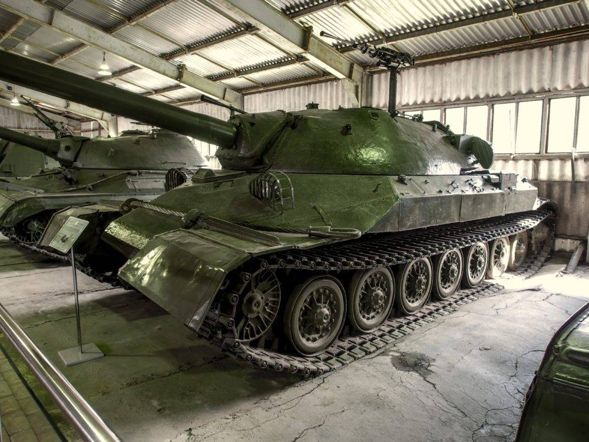

Танк (англ. tank) — бронированная боевая машина, чаще всего на гусеничном ходу,[сн 1] как правило с пушечным и дополнительным пулемётным вооружением, обычно во вращающейся полноповоротной башне, предназначенной в основном для стрельбы прямой наводкой.[1] На ранних стадиях развития танкостроения иногда выпускали танки с исключительно пулемётным вооружением, а после Второй мировой войны проводились эксперименты по созданию танков с ракетным вооружениемПерейти к разделу «#Ракетное вооружение» в качестве основного. Известны варианты танков с огнемётным вооружениемПерейти к разделу «#Другое вооружение». Определения танка как боевой машины было разным в разных армиях, так как их назначение и способы применения в разные эпохи менялись[2].
сылка танки
сылка